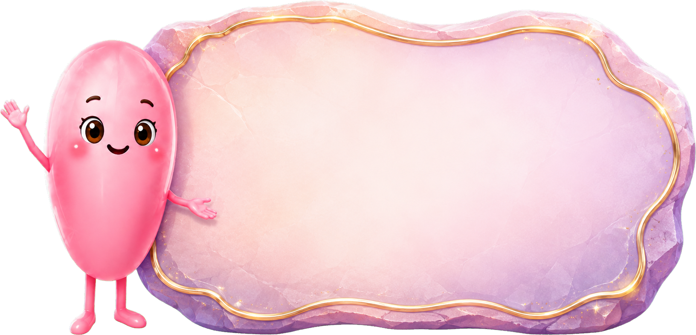

Скала артикуляции
Общий счёт: 0
←
Скала артикуляции
Найди парные знаки и зажги кристаллы!


Скала засияла!
Ты нашёл все парные знаки, выполнил 6 упражнений и получил 6 баллов.


10 секунд
Найди парные знаки и зажги кристаллы!
Ты нашёл все парные знаки, выполнил 6 упражнений и получил 6 баллов.

10 секунд